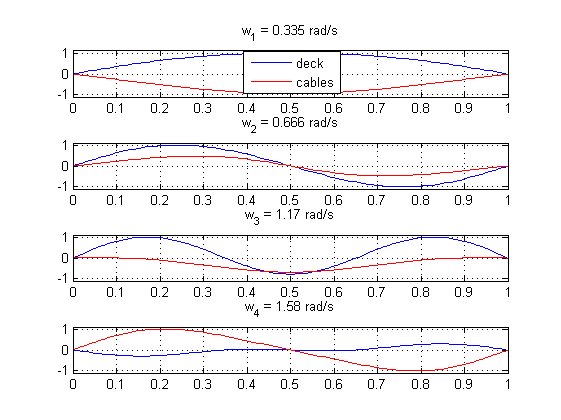
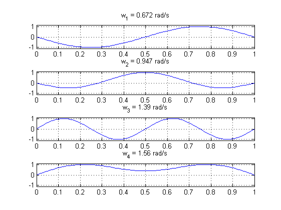
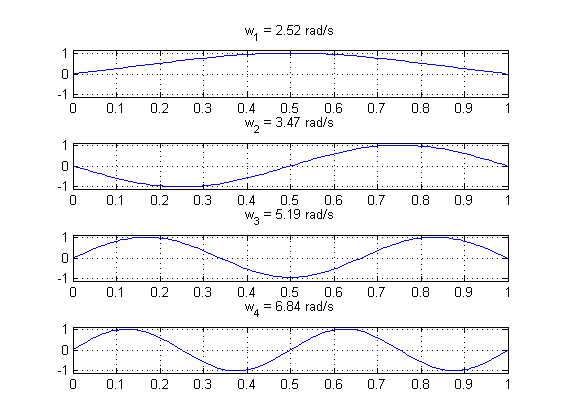

Description
The calculation of the eigen-frequencies and mode shapes of a suspension bridge using the present Matlab code is based on the theory of continuous beam and the theory of shallow cables. The mode shapes are obtained using Galerkin's method where a series expansion is used. The method was first applied by Sigbjørnsson & Hjorth-Hansen [1], then E. Strømmen [2] expanded their works to the vertical and torsional motion. Any error, modification, improvement of the present code is warmly welcomed.
The bridge is a represented as a horizontal streamlined beam, where the z axis is the vertical axis, the y axis is the along-beam axis and the x axis is the cross-beam axis. The three motions of interests (lateral,vertical, and torsional) and both symmetric and assymetric modes are computed.
References:
[1] Sigbjørnsson, R., Hjorth-Hansen, E.: Along wind response of suspension bridges with special reference to stiffening by horizontal cables. Engineering Structures 3, 27–37 (1981)
[2] Structural Dynamics, Einar N Strømmen, Springer International Publishing, 2013. ISBN: 3319018019, 9783319018010
Contents
Characteristics of the single span suspension bridge
The example belows is directly directly taken from the book of E.N. Strømmen "STRUCTURAL DYNAMICS" who explains in details the analytical calculation carried out. I only transcripted the calculation into a Matlab script, and therefore, all credits go to R. Sigbjørnsson, E. Hjorth-Hansen and E.N. Strømmen.
The variable Bridge is a structure with the fields described below
clear all;close all;clc % GENERAL INPUTS Bridge.L = 1250 ; % length of main span (m) Bridge.E = 2e11; % young modulus of bridge girder - steel here - (Pa) Bridge.Ec = 2e11; % young modulus of bridge cables - steel here - (Pa) Bridge.g = 9.81; % acceleration of gravity Bridge.m =9000 ; % lineic mass of girder (kg/m) Bridge.mc =1900 ; % lineic mass of cable (kg/m) Bridge.Ac = 0.22 ; % cross section main cable (m^2) Bridge.ec= 120; % sag (m) Bridge.hm = 2.75 ; % hanger length at mid span (m) Bridge.hr = 1.8; % distance between shear center and hanger attachment Bridge.bc = 15; % distance between the main cables (m) Bridge.H_cable = 1.12e8; % horizontal cable tensile force % analytical expression of tensile force can be obtained using: % Bridge.H_cable = Bridge.m*Bridge.g*Bridge.L^2/(16*Bridge.ec)*... % (1+2*Bridge.mc/Bridge.m*(1+4/3*(Bridge.ec/Bridge.L)^2)); % but H_cables is slightly different in that case % Discretisation of bridge main span in Nyy points Bridge.Nyy=100; Bridge.x = linspace(0,1,Bridge.Nyy); % ADDITIONAL INPUTS FOR LATERAL MODES % Moment of inertia with respect to bending about y axis % (used for lateral bridge analysis) Bridge.Iz = 16.6667; % ADDITIONAL INPUTS FOR VERTICAL MODES % Moment of inertia with respect to bending about z % axis (used for vertical bridge analysis) Bridge.Iy = 0.9524; % ADDITIONAL INPUTS FOR TORSIONAL MODES % cross section rotational mass (kg.m^2/m) Bridge.m_theta = 250000; % St venant Warping constant % (used for torsional bridge analysis)-- % alternative: use EIw called "warping resistance". Bridge.Iw = 4.2857; % product of St venant torsion constant It % and Modulus of elasticity in shear G (used for torsional bridge analysis) % another expression for GIt is "torsional stifness" Bridge.GIt = 0.2e12;
Application of the function eigenBridge
Nmodes=4; % number of modes to be computed % call of the function "eigenBridge". [wn,phi,phi_cables] = eigenBridge(Bridge,Nmodes); % wn: eigen frequenciers (rad/s) % phi: mode shapes of the deck % phi_cables: mode shapes of the cables ( alteral displacement only)
Lateral motion
The sign of the mode shapes depends on the value of Nyy, but has no consequences on the relevancy of the calculation unless Nyy is too low
figure for ii=1:Nmodes, subplot(Nmodes,1,ii) hold on plot(Bridge.x,squeeze(phi(1,ii,:))) plot(Bridge.x,squeeze(phi_cables(ii,:)),'r') if ii==1, legend('deck','cables','location','south') end title(['w_',num2str(ii),' = ',num2str(wn(1,ii),3),' rad/s']); grid on;box on ylim([-1.1,1.1]) end set(gcf,'color','w');
Vertical motion
The sign of the mode shapes depends on the value of Nyy, but has no consequences on the relevancy of the calculation unless Nyy is too low
figure for ii=1:Nmodes, subplot(Nmodes,1,ii) hold on plot(Bridge.x,squeeze(phi(2,ii,:))) title(['w_',num2str(ii),' = ',num2str(wn(2,ii),3),' rad/s']); grid on;box on ylim([-1.1,1.1]) end set(gcf,'color','w');
Torsional motion
The sign of the mode shapes depends on the value of Nyy, but has no consequences on the relevancy of the calculation unless Nyy is too low
figure for ii=1:Nmodes, subplot(Nmodes,1,ii) hold on plot(Bridge.x,squeeze(phi(3,ii,:))) title(['w_',num2str(ii),' = ',num2str(wn(3,ii),3),' rad/s']); grid on;box on ylim([-1.1,1.1]) end set(gcf,'color','w');